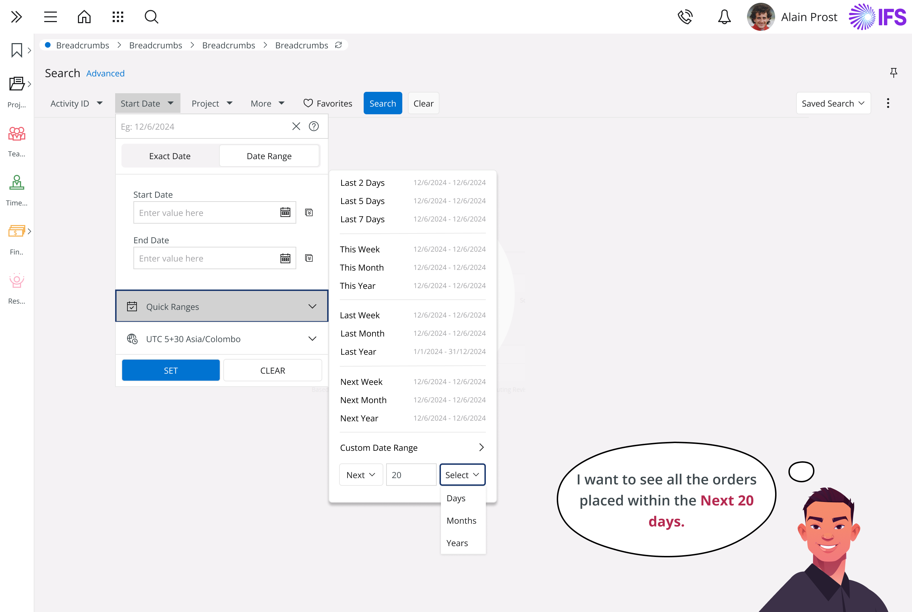
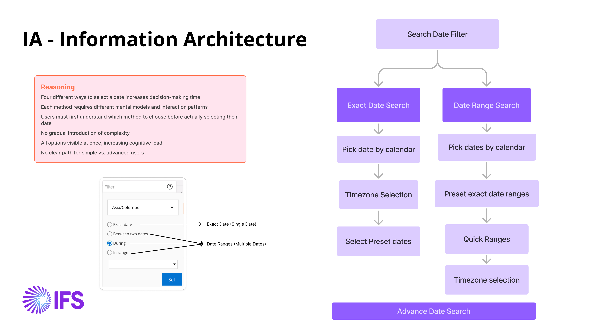
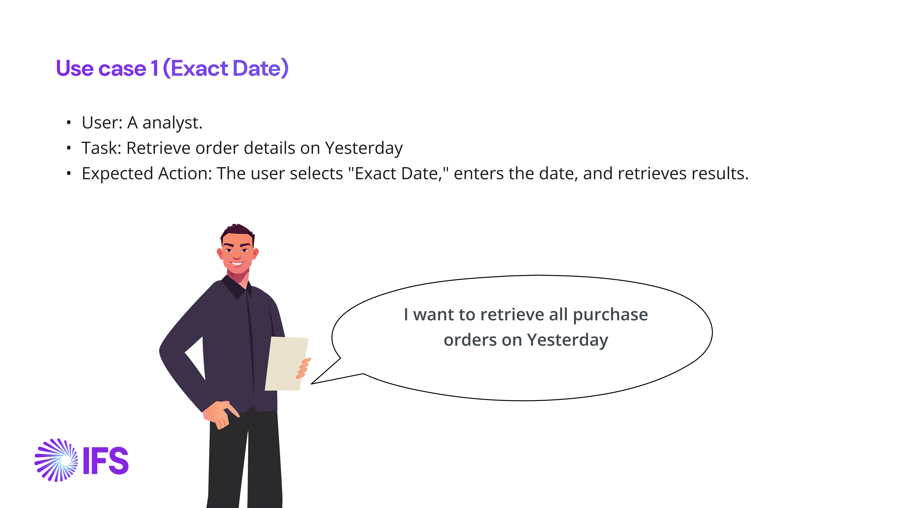
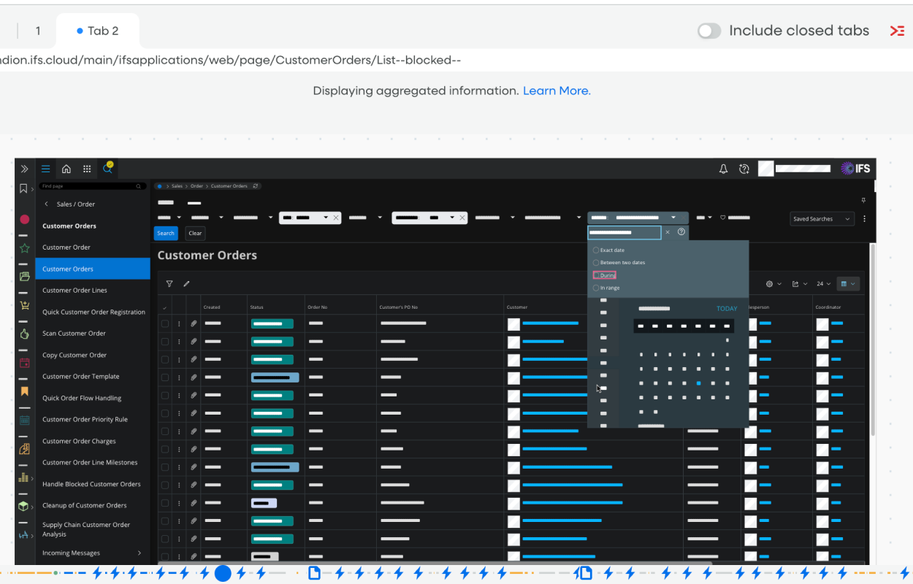
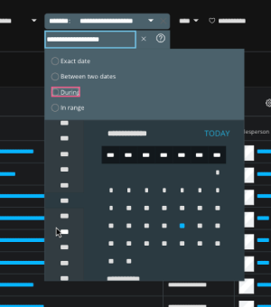
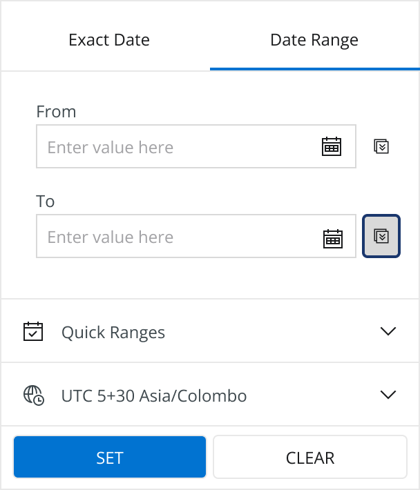

IFS Cloud · Research case study
Four ways to pick a date, and none of them worked
The date filter is one of the most-used controls in IFS Cloud, and most people who opened it never touched the calendar. Research found the real problem, a redesign fixed it, and the conversion number moved from 32.31% to 35.12%.

01 · ProblemTwo-thirds of the people who needed a date never reached the calendar
The date filter sits inside almost every list and report page in IFS Cloud. Not everyone who opens the filter pane needs to search by date — plenty of people are there for other filters entirely. But among the people who do open it looking for a date, we track one thing: do they go on to actually use the calendar, or do they give up first?
That number was 32.31%. The goal wasn't to make everyone use the calendar — it was to get the people who already needed it to 35% or more. A modest-sounding target, but it meant fixing whatever was losing two-thirds of the people who had a real date in mind.
02 · AuditBefore any research, I audited the filter against UX laws and IFS heuristics
The goal of a UX audit is to find usability issues, design flaws and areas for improvement. I started with the filter as it stood in the search pane: four ways to specify a date, dropdowns of preset options, and a calendar. I checked it against established UX laws and the IFS heuristics, and used a severity scale to rank what I found, up to the “usability catastrophe” that has to be fixed before release.
The idea is to have user friendly search and filtering capabilities, instead of typing SQL like queries, give UIs with fields, This is a common practice in the software world!
An IFS community post, kept as evidence in the auditWhat the audit recommended
Recommendations were tiered by effort, so the quick wins could land first.
The audit's conclusion was that the filter caused usability issues through cognitive overload, dual calendars and vague options, and that a redesign built on simplicity, logical conditions and better feedback should bring faster date selection, higher adoption (a 40% calendar-usage target) and fewer errors (a 30% reduction in misclicks). Those were the audit's expectations, not measured results. Its next step was to test the new design and iterate on feedback.
Three of the recommendations are visible in the redesign below: “In range” is gone, relative ranges became Quick Ranges, and logical conditions live in the Advanced Date Search.
03 · ResearchFive kinds of evidence had to agree before I trusted any of them
I didn't start from the assumption that the calendar itself was broken. A 32.31% conversion rate is a single flat number — it can't tell you whether people are confused, uninterested, or something else entirely. So before designing anything, I pulled together five different kinds of evidence and made sure they agreed with each other before trusting any one of them.
| Method | What it was | What it was good for |
|---|---|---|
| User interviews | Talking through how people actually think about a date when they're searching, in their own words. | Surfacing the mental model behind a search, not just the click path. |
| Session-replay analytics | Page-level interaction data — clicks, expansions, and which exact filter options people touched on a live production page. | Turning "people seem confused" into an actual count. |
| Support tickets and community posts | Issues already logged against the date filter, including tickets tracked in Jira. | Confusion that was already costing support time, not hypothetical. |
| Competitive review | How SAP, Microsoft Dynamics, Salesforce and Oracle handle date filtering in their own enterprise tools. | Checking whether "relative" date language (last week, next 30 days) was an IFS-specific idea or an established pattern. |
| Heuristic audit | The existing filter checked directly against IFS's own usability standards. | A structured, repeatable pass, independent of any one user's opinion. |
What the research found
Every method wrote its findings as a hypothesis, not an opinion: since we observed X, we believe changing Y will cause Z — a format that forces a claim to name its own evidence before it's allowed to influence the design. Five of those observations mattered most:
Manual entry felt slower than it should
People who preferred typing a date by hand found the interface slower and less intuitive than other methods — a direct signal from interviews, not a guess about typing speed.
A pattern users already knew was invisible here
People familiar with "In-Range" from IFS's own Enterprise Explorer didn't realise the equivalent existed in this filter at all — the same company, teaching two different vocabularies for the same idea.
One preset quietly generated error clicks
Fullstory showed the "Today" option collecting an unusually high number of error clicks — people were either mis-clicking it or unsure what it actually did.
Two "advanced" options went almost untouched
"In-Range" and "During" saw very little use in session data, and what use they did get looked uncertain — a sign people didn't understand them well enough to reach for them.
Two calendars, and no idea why
Session replays showed people struggling to understand why a date range needed two separate calendars, leading to wrong selections and frequent use of the "Clear" button to start over.
04 · DiagnosisFour options that were really two ideas
The old filter offered four options for specifying a date: Exact date, Between two dates, During, and In range. Laid out, they looked like four distinct choices. In practice, they were two ideas — a single exact date, or a range of dates — wearing four different names.

Having four visible options before you've even picked a date has real costs:
- Four different ways to select a date increases decision-making time — people had to work out which option matched their intent before they could start.
- Each method needed a different mental model, even though two pairs of them meant almost the same thing.
- Users had to understand which method to choose before they could even begin choosing a date.
- There was no gradual introduction of complexity — everything was visible at once, whether you needed it or not.
- All options showing simultaneously raised cognitive load for a control most people use in passing.
- There was no clear path separating a simple, everyday search from a more advanced one.
This is what a 32.31% conversion rate actually looked like up close: not a broken calendar, but a decision the interface made people take before they were ready to.
Grounding it in real tasks
Alongside the audit, I worked through concrete use cases — a specific person, a specific task, a specific date phrase — to keep the redesign anchored in how people actually ask for dates rather than in the filter's existing categories.

05 · EvidenceWhat the data showed, and what others already do
The interviews and the audit explained why the filter felt hard. To check that the same pattern showed up when nobody was being watched, I pulled click-level analytics off the live production page — the actual radio options people clicked before the redesign shipped.

These are small, single-page counts, not a statistically powered study — I'm treating them as directional, not conclusive. But directional was enough: people were re-clicking between options that meant almost the same thing, on a live page, with no interviewer in the room to ask "what were you expecting?" It was the same confusion the interviews described, showing up in raw behaviour instead of self-report.
Looking outward: how others do it
Before assuming IFS needed a new idea, I checked whether one already existed elsewhere. I reviewed how SAP, Microsoft Dynamics, Salesforce and Oracle handle date filtering in their own enterprise products. The clearest reference point was Salesforce: its relative-date filters in Lightning reports — options like "last week" or "next 30 days" phrased as names rather than raw date math — were already a shipped, mature pattern in a tool used by a comparable audience. That gave the "Quick Ranges" direction real precedent, rather than betting the redesign on an untested idea.
06 · HypothesisFrom insight to a brief, and a hypothesis
I turned the five findings into "how might we" questions, grouped by the theme each one pointed at, so the redesign had a clear brief before any screen got drawn:
- Clarity and usability — could the terminology be simple enough that each option was self-explanatory, with no near-duplicate choices like "In-Range" and "Between Two Dates"?
- Consistency — could every option share the same interaction pattern, and the same language the rest of IFS Cloud already used?
- Error prevention and feedback — could real-time validation catch an invalid range before someone had to click "Clear" and start over?
- Flexibility — could quick, predefined ranges and detailed custom ones live in the same flow without either one adding weight to the other?
- Efficiency — could someone switch between a simple and an advanced search without losing what they'd already entered?
We believe that reducing the date selection methods from four options to two primary options (Single Date and Date Range) will increase calendar usage from 32.31% to our target of 40%, because it reduces cognitive load and aligns with UX laws including Hick's Law.
The hypothesis written before any screen was designed40% was the internal stretch case built into that hypothesis — a deliberately ambitious bar to design against. The number IFS formally tracked, and the one reported here, was the more conservative 35%+ target, reached at 35.12%. I'd rather report the number I was actually held to than the more flattering one.
07 · RedesignFour confusing options became two honest ones
The fix wasn't to add features — it was to collapse four confusing options into two honest ones, and let each grow into its own detail instead of dumping everything on screen at once.


- Two real modes, not four. Exact Date and Date Range are now the only top-level choice, matching what the options actually meant all along.
- Quick Ranges replace open-ended guessing. Instead of typing raw dates, people can pick Last 2/5/7 Days, This Week/Month/Year, Last or Next Week/Month/Year, or a custom "Next N Days/Months/Years" — named ranges that match how people actually talk about dates.
- Complexity is layered, not flattened. Timezone handling and preset ranges sit a step below the initial choice, so a simple search stays simple.
- Power users get their own path. An Advanced Date Search sits alongside the basic flow, with conditional rules (for example, "order date is equal to a date AND a range is excluded") and settings like timezone-aware search and weekdays-only search — without cluttering the everyday case.
The use-case work also surfaced the value of timezone awareness directly inside the date logic itself, since "yesterday" or "next 20 days" means something different depending on where you sit — reflected in the timezone selector built into both the basic and advanced flows.
08 · Usability testFour tasks, written the way people actually ask for dates
With a first design in place I wrote a test script and four tasks. Each one puts the participant in a specific role with a specific date phrase, then watches which route they take and asks what they noticed afterwards. Together they cover a single day with a timezone, a range that starts in the past, a range that looks forward, and a whole year.
09 · IterationThe design file after testing: what went, what stayed in step, and what had to be settled
The iteration is recorded in the design file as a spec: Exact Date and Date Range in light and dark, their anatomy, a block of design decisions, and an FAQ of special remarks for engineering. These are the decisions that mattered most.
The dropdown that hid the main job
One decision was a removal. I took out the collapsible “Date Range” dropdown on the Date Range tab, because it hid the primary function of the filter and added no meaningful value in that context. The From and To fields are now visible the moment the tab opens. The decision was logged at a morning meeting on 3 November 2025.
Quick ranges and the calendar share state
A natural question was whether people could use quick ranges and the calendar together. Disabling one while the other is in use would not work, because a person might change their mind. So both stay editable and in step: choosing “Last 2 Days” puts the first day in From and the last day in To, and changing a date afterwards clears the quick range. That also lets people nudge a quick range by a day either way.
Smaller questions, settled in the spec
| Question | What the design file records |
|---|---|
| Can people use quick ranges and the calendar together? | Yes. Both can be filled. Choosing a quick range fills From and To; changing a date by hand clears the quick range. |
| Which colour shows the active tab? | Blue. The tab view is built from two toolbar buttons, so blue is the buttons' default colour. |
| Do the listed dates follow the timezone? | Worked through as a scenario: a user in Colombo changes the timezone first, then opens Quick Ranges and cannot tell whether the dates listed beside each range follow the timezone she chose. |
| How does a custom range work inside Quick Ranges? | The menu ends with a Custom Date Range: pick a number and a unit (days, months or years), tick “Including Today” if needed, then Apply or Discard. |
10 · ResultThe target was met: 32.31% → 35.12%
The target was met and slightly exceeded. It's not a dramatic-looking number on its own, but it represents real people who previously opened the filter pane, saw four confusing options, and closed it without finding their date — who now complete the task instead.
What I took from it
- A flat conversion number can hide a structural problem. The calendar wasn't the issue; the decision in front of it was.
- Options that look distinct aren't always distinct. Four labels for two concepts cost people time before they'd even started.
- Real use cases keep a redesign honest. Testing against a specific analyst asking for "yesterday's orders" caught things a component-level review wouldn't have.
- No single method carried the case on its own. Interviews explained the confusion, support tickets and production click data showed it was already costing time at scale, and the competitive review showed a fix was already proven elsewhere. It was the five methods agreeing with each other, not any one of them, that made the diagnosis trustworthy enough to redesign around.